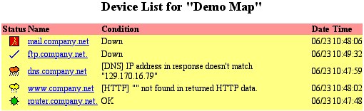

Use the Device List web page to view a list of devices appearing in all open maps. The list shows each device's status, name, condition, and date and time of the last change in status.

Web Device List. This shows the status of all the devices InterMapper is monitoring, sorted by severity of their status.